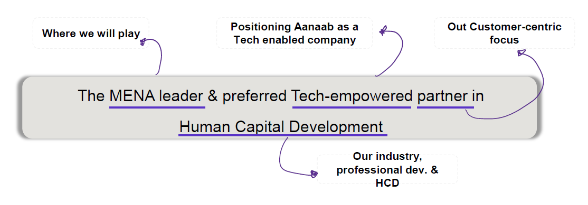
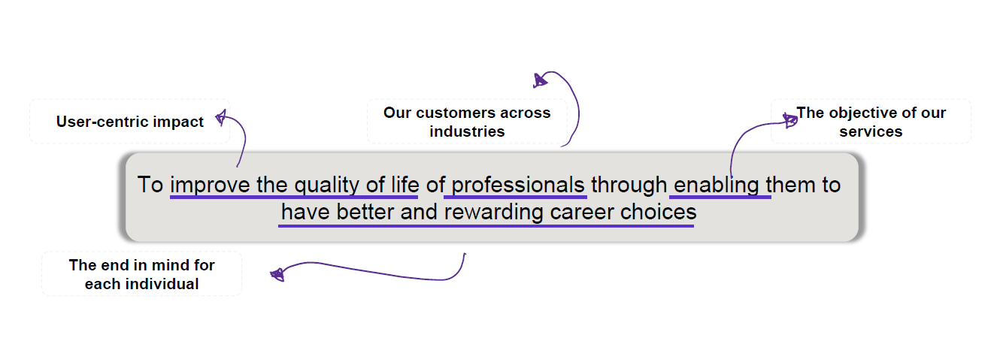
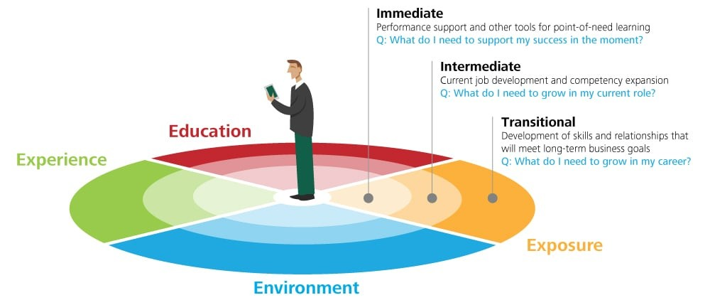
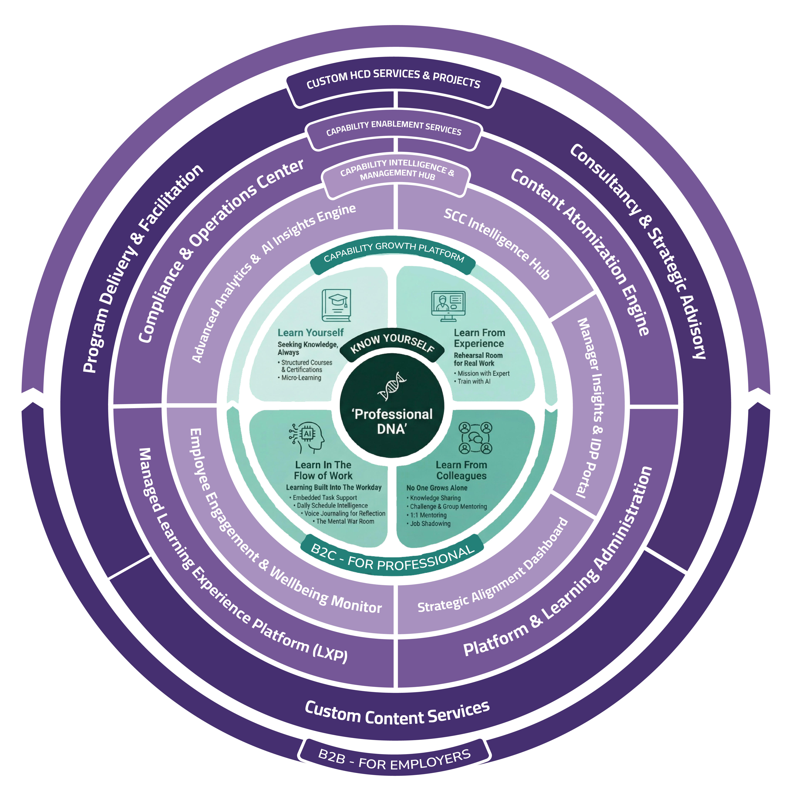
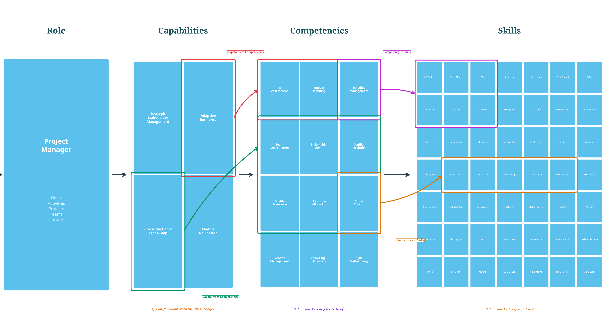
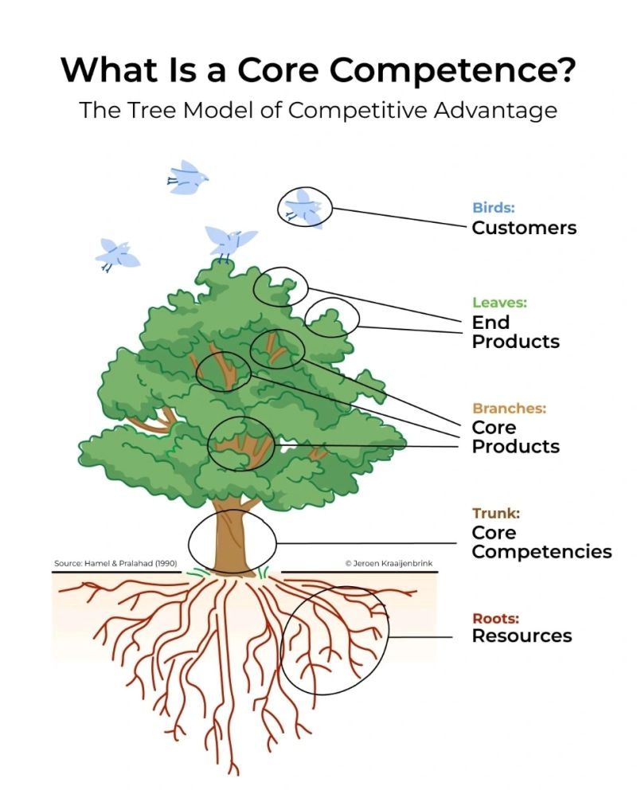

Four parts — one complete picture of the HCDaaS™ transformation
01
Strategic Context
Where Aanaab stands today, our vision and mission, the four strategic pillars, and the market opportunity that defines our ambition.
Slides 1 – 7 · ~15 minutes
02
The Solution — Live Scenarios
Experience HCDaaS™ through the people it serves: Sarah the Professional, Nora in HR, Khalid the Manager, and Fahad the CHRO. Each persona reveals a different layer of the ecosystem.
Slides 8 – 23 · ~25 minutes
03
Content Strategy & Operations
The AI Content Factory, 5-phase content lifecycle, content operational sequence, and the Create Once Publish Everywhere (COPE) methodology.
Slides 25 – 27 · ~10 minutes
04
Strategy Depth
The North Star PGI metric, pricing architecture, 18-month product roadmap, competitive advantage, and risk assessment.
Slides 28 – 35 · ~20 minutes
Our Foundation
The vision and mission that anchor every strategic decision
Vision

Mission

Strategic Direction
With an aim to exit in 4 years, Aanaab to become a regional leader in HCD transforming careers and lives
Value 1
Create Need & Solve With Resilience
Value 2
Impact Hearts & Lives
Value 3
Enable to Grow From One to All
Vision
The MENA leader & preferred Tech-empowered partner in Human Capital Development
Mission
To improve the quality of life of professionals through enabling them to have better and rewarding career choices
1
Develop a leading product in HCD industry
2
Grow B2G & Corporate Training
3
A growing organization with top talents
4
Reputable & Desired Brand
Valuation is the end-game
Full Cycle of HCD
B2G accounts penetration
Understanding the HCD Landscape
Aanaab's Market Intelligence and Benchmarking Engine — evidence-based strategy
A holistic analysis of the HCD and L&D landscape across Saudi Arabia, the MENA region, and globally.
What the Engine Tells Us
Saudi enterprises spend a significant portion of L&D budget on fragmented, one-off training events with no measurable outcomes
No regional platform currently offers a full-cycle, AI-powered, Saudi-Native capability development solution
Vision 2030 creates a window: 300,000+ professionals targeted for reskilling by 2027
Two Opportunities, One Answer
The market has two massive unmet needs — HCDaaS™ answers both with one integrated solution
Problem 01
End-to-End Solutions Needed
The market is deeply fragmented. Enterprises buy content from one provider, LMS from another, coaching from a third, and assessments from a fourth. There is no single partner who can manage the full capability development lifecycle from diagnosis to delivery to measurement.
Fragmented MarketNo Outcome Accountability
Problem 02
New Way of Learning Needed
Static course catalogs are dead. Professionals do not learn through annual training events. They learn in the flow of work, in micro-moments, through peer exchange, and through real-world application. The existing L&D model is fundamentally broken — it measures completion, not capability.
Static CatalogsCompletion ≠ Capability
↓
B2B Solution
HCDaaS™
From Activities to Outcomes
A fully managed, end-to-end Human Capability Development service delivered as a subscription. The enterprise gets a complete capability partner — platform, content, intelligence, operations, and consulting — in one contract.
B2C Solution
Capability Growth Platform (CGP)
From Events to Continuous Growth
A personalized, AI-powered daily learning experience for professionals in Saudi Arabia. Continuous micro-learning, AI-driven growth pathways, peer mentoring, and a verified professional capability brand — always-on capability building in one platform.
The Visionary Archetype — Be First
Based on the Strategy Palette framework developed by BCG — Aanaab's strategic posture: define the category before others realize it exists
BCG Strategy Palette
UNPREDICTABILITY →
Adaptive
Be Fast
Shaping
Be the Orchestrator
Classical
Be Big
AANAAB
Visionary
Be First
Renewal
Be Viable
Malleability →
Harshness →
Visionary Strategy Characteristics
Speed Over Perfection
Ship, learn, and iterate faster than competitors can analyze
Shape the Environment
Create the standards, frameworks, and language others will follow
Invest Ahead of Demand
Build Professional DNA™ and CGP before the market is asking for them
Accept Uncertainty
The category is undefined — that is the opportunity, not the risk
"Aanaab's strategy is to define the category."
Not compete in an existing market — create the one that does not yet exist in MENA
What We Deliver as a Service
By calling the solution HCDaaS™, Aanaab makes a bold claim to its customers: "You are no longer buying a training tool; you are subscribing to a continuous capability-building engine."
Core Claims of the HCDaaS™ Model
Measurable Capability Outcomes
Moving people from Point A to Point B across concrete skills, knowledge, and values — with the data to prove it.
Lifelong, Continuous Development
An ongoing journey, not one-off events. Content, methods, and pathways stay current with evolving roles and priorities.
XaaS
as a Service
Experience, Support & Enablement
We handle design, orchestration, and support. Tailored experiences that change behavior — plus guidance for HR/L&D teams.
Reliability, Data & Accountability
Transparent analytics showing progress, impact, and ROI — accountable for agreed outcome metrics.
The Core Shift: From delivering activities (courses, training hours) to guaranteeing outcomes (capability readiness, performance improvement, employee growth).
Human Capability Development as a Service
From strategic concept to an end-to-end integrated solution
Strategic Concept
TRANSFORMED INTO
End-to-End HCDaaS™ Solution
One Integrated Ecosystem — Five Powerful Layers
Click any layer to explore its pillars and offers. Each layer amplifies the next.
B2C — For Professionals
1
Professional DNA™
Foundational intelligence & living professional profile. T-shaped model, gamified assessment, AI pathways, and PGI score.
Serves: The Professional (Direct B2C)
Core IP
▼
Tap to expand
DNA Assessment
Guided, gamified 15–20 min onboarding that establishes baseline skills, aspirations, and learning preferences.
T-Shaped Growth Pathway
Deep specialization (vertical) + broad cross-functional knowledge (horizontal). Fills progressively to show growth.
Professional Growth Index (PGI)
A credit score for professional growth measuring skills, competence, and capability — not completions or hours.
CapabilityCrest™ Badge System
Multi-tier validation (Foundational → Expert). Open Badge standards, shareable to LinkedIn. Missions required for higher tiers.
2
Capability Growth Platform (CGP)
Daily AI-powered learning across 4 pillars. TikTok-style micro-learning, AI role-play, peer mentoring, and contextual nudges.
Serves: The Professional (Daily Engagement Engine)
Structured Courses & Certifications — self-paced and instructor-led, including certification prep and licensing programs.
2
Micro-Learning (Social Media Style) — video snippets, infographics, carousels, podcast snippets, "A Day in the Life" narratives, and AI-powered news briefings.
Learn From Experience (70% Experiential)
Missions with expert/AI evaluation + AI role-play scenarios
▼
1
Mission with Expert/AI Evaluation — practical assignments mimicking real work scenarios, submitted for expert or AI assessment.
2
Train with AI — AI-driven role-play where the AI assumes roles (difficult client, skeptical stakeholder) for practicing interpersonal and negotiation skills.
Learn From Colleagues (20% Social)
Knowledge sharing, group mentoring, 1:1 mentoring, job shadowing
▼
1
Knowledge Sharing — "Share What You Learned" capsules after external courses/conferences, amplifying ROI of training investments.
2
Submit Your Challenge & Group Mentoring — most-voted topics organized into live group mentoring sessions with experts.
3
1:1 Mentoring — auto-matched or manually selected mentors for personalized career advice.
4
Job Shadowing (B2B) — facilitated cross-functional shadowing with structured observation and reflection prompts.
Learn in the Flow of Work (Ambient AI)
AI-powered companion embedded in daily workflow
▼
1
Embedded Task Support — native app in Slack/Teams providing on-demand context-aware support without leaving the workflow.
2
Daily Schedule Intelligence — AI reviews upcoming schedule and surfaces contextual micro-lessons before meetings.
3
Voice Journaling for Reflection — capture insights via voice; AI transcribes, tags, and builds a personal knowledge archive.
4
The Mental War Room — guided focus exercises with breathing, visualization, and cognitive priming in under 5 minutes.
Dynamic SCC Framework — AI-managed architecture continuously mapping industry-standard taxonomies against enterprise roles with multi-level proficiency scales.
2
Automated Learning Needs Analysis & Skills Mapping — real-time gap analysis leveraging Professional DNA™s, replacing annual surveys.
3
Role-Based Learning Path Design — AI constructs precise learning journeys blending all learning models, recalibrating as mastery is demonstrated.
4
Succession Planning & Internal Mobility Simulator — skills-based succession scoring and career pathing based on verified skill adjacencies.
Manager Insights & Performance Portal
Team capability overview, living IDP tracking, coaching prompts
▼
1
Team Capability Overview — consolidated view of each team's skills, identifying specific gaps threatening performance.
2
IDP Tracking & Continuous Performance Dialogue — real-time visibility into development goals, enabling regular in-context feedback. The IDP becomes a living document evolving weekly.
3
AI-Generated Coaching Prompts — data-driven conversation starters for 1:1 meetings based on team members' recent learning activities.
Strategic Alignment Dashboard
ROI calculator, strategic capability gap matrix for CHRO/CEO/Board
▼
1
ROI & Business Impact Calculator — correlates learning engagement with business metrics (productivity, retention, sales) to demonstrate financial return.
2
Strategic Capability Gap Matrix — high-level visualization of current capabilities vs. those required for upcoming strategic initiatives or giga-projects.
Engagement & Wellbeing Monitor
Sentiment analysis, burnout risk, social learning impact
▼
1
Anonymized Sentiment Analysis — aggregates macro-trends from AI-Assistant interactions to gauge workforce sentiment without compromising privacy.
2
Burnout Risk Indicators — identifies departments showing patterns of high stress or disengagement for proactive HRBP intervention.
3
Mentoring & Social Learning Impact — tracks participation rates and effectiveness of knowledge-sharing networks.
Each persona reveals a different layer of the solution — from the individual professional to the C-suite
S
Sarah
A Professional Using HCDaaS™
Mid-level project manager at a growing Saudi enterprise. Wants to advance her career but feels stuck in generic training cycles. HCDaaS™ transforms her professional life through personalized intelligence and continuous growth.
Professional DNA™CGPPGI Score
N
Nora
Head of Learning & Development
Responsible for the L&D function at a 500-person enterprise. Drowning in administration, compliance tracking, and proving ROI to leadership. HCDaaS™ gives her real-time workforce intelligence and a fully managed operational engine.
Operations team lead with 12 direct reports. Wants to coach his team effectively but lacks real data on their capabilities. HCDaaS™ gives him a Manager Insights Portal with AI-generated coaching prompts and a living IDP tracker.
Manager InsightsLiving IDP
F
Fahad
CHRO / Executive Leadership
Chief Human Resources Officer at a large Saudi enterprise. Needs to prove that capability investment drives business outcomes. HCDaaS™ connects learning engagement to business metrics and transforms succession planning into a science.
Strategic DashboardROI Analytics
Each persona reveals a different layer of the solution.
Persona 01 — The Professional
Meet Sarah — A Professional Using HCDaaS™
S
Sarah
Project Manager, 28, Riyadh
Experience
5 years
Goal
Senior Manager
Challenge
Generic L&D
Today's Reality
Generic training cycles — courses too broad, not relevant to her role
Meaningless certifications — no proof of real capability
No clear path — no visibility on skill gaps to Senior Manager
Isolated learning — no mentors, no peer connection
With HCDaaS™
Personalized Growth Path based on her unique Professional DNA™
AI Skill Intelligence showing exactly where the gaps are
Career Mapping connecting today's learning to tomorrow's role
Verified badges that managers and employers actually value
Sarah's Four-Step Journey with HCDaaS™
Step 1
DNA Assessment
Step 2
Daily Learning
Step 3
Verified Badges
Step 4
PGI Growth
Step 1: DNA Assessment
Step 2: Daily Learning
Step 3: Verified Badges
Step 4: PGI Growth
It Starts with Knowing Yourself — The Professional DNA™ Assessment
Gamified Assessment
Pre-populated from LinkedIn profile and existing HR records. Sarah does not start from a blank page — the system already knows her employment history, certifications, and role.
T-Shaped Growth Pathway
Creates a deep vertical bar of core expertise (Project Management) plus a broad horizontal bar of foundational skills (Leadership, Communication, Digital Fluency). Sarah sees exactly where she is strong and where she needs to grow.
Baseline PGI Score Established
Sarah receives her initial Professional Growth Index score of 320 — her professional capability benchmark. This becomes the baseline against which all future growth is measured.
CapabilityCrest™ Badge System
Multi-tier validation (Foundational → Expert). Open Badge standards, shareable to LinkedIn. Higher tiers require completing real missions, not just quizzes.
Professional DNA™ Data Sources
Assessments
Formal evaluations of skills, knowledge, competencies & learning preferences
Establishes baseline at onboarding; tracks progression over time
360° Feedback
Multi-directional input from peers, managers, and direct reports
Surfaces blind spots and interpersonal development needs
Goals & Aspirations
Career ambitions & development objectives, coupled with formal IDP
Aligns learning paths with desired career trajectory & IDP milestones
Behavioral & Usage Data
Real-time insights from daily platform interactions
Continuously refines personalization based on engagement patterns
LinkedIn Integration
Professional history, endorsements, and external skill signals
Enriches initial DNA profile & connects to external professional identity
Sarah's T-Shape Profile
Leadership
90%
Communication
85%
Problem Solving
70%
Project Mgmt
Core · 95%
Data Analytics
40%
Strategic Thinking
15%
Digital Fluency
10%
Stakeholder Mgmt
Risk Assessment
Budget Control
Agile Delivery
Program Recovery
Strategic Planning
Change Mgmt
Exec Presentation
Vendor Mgmt
Negotiation & Influence
Portfolio Strategy
Cross-func Leadership
Breadth
Depth
Developed
In Progress
Gap — To Fill
320
Starting PGI
11
SCC Gaps
24
Actions Queued
SCC Framework — Role to Skills Decomposition
Step 1: DNA Assessment
Step 2: Daily Learning
Step 3: Verified Badges
Step 4: PGI Growth
The Four Learning Pillars
Based on Bersin's Continuous Learning Model and the 70:20:10 framework — learning becomes a daily habit, not a calendar event
Structured Courses & Certifications — self-paced and instructor-led, including certification prep and licensing programs
2
Micro-Learning — TikTok-style video snippets, infographics, carousels, podcast snippets, "A Day in the Life", AI news briefings
Learn From Experience
Experience · 70% Experiential · "Rehearsal Room for Real Work"
1
Mission with Expert/AI Evaluation — practical assignments mimicking real work scenarios, submitted for assessment
2
Train with AI — AI-driven role-play where the AI assumes roles (difficult client, skeptical stakeholder) for practicing skills
Learn From Colleagues
Exposure · 20% Social · "No One Grows Alone"
1
Knowledge Sharing — "Share What You Learned" capsules after external courses/conferences
2
Submit Your Challenge & Group Mentoring — most-voted topics organized into live expert sessions
3
1:1 Mentoring — auto-matched or manually selected mentors for personalized career advice
4
Job Shadowing — facilitated cross-functional shadowing with structured reflection prompts
Learn in the Flow of Work
Environment · 70% Experiential · "Learning Built Into The Workday"
1
Embedded Task Support — native app in Slack/Teams providing context-aware support without leaving workflow
2
Daily Schedule Intelligence — AI surfaces contextual micro-lessons before upcoming meetings
3
Voice Journaling — capture insights via voice; AI transcribes, tags, and builds a personal knowledge archive
4
The Mental War Room — guided focus and clarity exercises with cognitive priming in under 5 minutes

Based on Bersin's Continuous Learning Model (The Four Es)
The four pillars map directly to Bersin's framework: Education (Learn Yourself), Experience (Learn From Experience), Exposure (Learn From Colleagues), and Environment (Learn in Flow of Work) — combined with the 70:20:10 learning model.
Step 1: DNA Assessment
Step 2: Daily Learning
Step 3: Verified Badges
Step 4: PGI Growth
Sarah's Personalized Learning Path
AI maps her SCC gaps to a blended learning journey across all 4 pillars — here's a day in Sarah's life
Target SCC Gap
This week's focus
Stakeholder Management
Competency · Depth Bar
35% proficiency → target 80%
Related Gaps
Negotiation & Influence
Exec Presentation
Strategic Thinking
Sarah's Learning Path — Powered by AI
Learn Yourself
+5 PGI
Micro-Video: "Stakeholder Mapping in 60 Seconds" — TikTok-style visual explainer on identifying key stakeholders and their influence levels.
Video · 60secStakeholder Mgmt
Learn in Flow of Work
+3 PGI
AI Nudge: "You have a project review with VP at 10:00. Here's a 2-min prep on presenting status updates to executives." Contextual micro-lesson pushed via Teams.
AI Nudge · 2minExec Presentation
Learn From Experience
+15 PGI
AI Simulation: "Difficult Stakeholder Negotiation" — the AI plays a resistant department head pushing back on project scope. Sarah practices de-escalation and alignment techniques. Score: 82%.
AI Role-Play · 15minNegotiation
Learn From Colleagues
+10 PGI
Group Mentoring: "Managing Stakeholder Expectations" — a senior PMO director shares real-world war stories. Sarah submits a challenge from her current project and gets live feedback.
Live Session · 30minStakeholder Mgmt
Voice Reflection
+2 PGI
Voice Journal: Sarah records a 90-second reflection: "Realized I need to align stakeholders early, not after decisions are made." AI tags it, links to her learning path.
Voice · 90secReflection
Daily Total: +35 PGI points
Activities: 5 across all 4 pillars
SCC Progress: Stakeholder Mgmt 35% → 41%
Time invested: ~50 min
Step 1: DNA Assessment
Step 2: Daily Learning
Step 3: Verified Badges
Step 4: PGI Growth
Every Achievement Is Verified, Visible, and Portable
A robust system where every step in professional development is authenticated, easily shared, and recognized globally.
Rigorous Validation, Not Just Attendance
Sarah earns CapabilityCrest™ badges through demonstrated performance — completing micro-courses, scoring above threshold in AI simulations, and having expert-reviewed missions accepted. Badges cannot be gamed.
Open Badge Compliant & LinkedIn Shareable
All badges meet the IMS Global Open Badge specification — verifiable by any employer worldwide. One click to share to LinkedIn, where they appear as verified achievements with a validation link.
Multi-Tier Badge Progression
Each capability domain has four levels — Foundational, Associate, Professional, and Expert. Sarah is pursuing the "Negotiation — Professional" badge after earning Foundational and Associate levels.
Example: Earning the "Negotiation — Professional" Badge
✓Complete 3 micro-courses on negotiation principles (Learn Yourself)
✓Score 85%+ in 2 AI negotiation simulations (Learn From Experience)
✓Submit and pass an expert-reviewed negotiation mission (Cross-validation)
CapabilityCrest™ Badge Progression
FOUND.
Basic Assessments
ASSOC.
Applied Exercises
← Sarah is here
PROF.
Missions & Sims
→ Share to LinkedIn
EXPERT
Cross-Module
LinkedIn Share Ready
Verified · Open Badge · IMS Global Compliant
3
Badges earned this quarter
Step 1: DNA Assessment
Step 2: Daily Learning
Step 3: Verified Badges
Step 4: PGI Growth
Growth Is Continuous — And So Is the Measurement
Professional Growth Index (PGI) — the quantified measure of Sarah's capability development over time
PGI Climbs from 320 to 680 in Six Months
Consistent daily learning, completed missions, earned badges, and peer mentoring sessions drive sustained PGI growth. Every verified action contributes to a quantified professional capability score.
T-Shape Deepens and Broadens
Sarah's vertical bar deepens with advanced Project Management mastery. Her horizontal bar expands: she has now developed three of the five foundational capability domains — Leadership, Strategic Communication, and Digital Fluency.
Drop Intelligence System — Skills Decay Prevention
Any skill Sarah has earned but has not engaged with for 90 days begins to depreciate. The system sends targeted prompts to re-engage, ensuring that her PGI reflects current, active capability — not a historical artifact.
Sarah's Result After 6 Months
Sarah is continuously capable, professionally branded, and genuinely career-ready. Her manager has noticed the change in her confidence and output. Her PGI score is visible in the HR system — she is now flagged as a high-potential candidate for the Senior Manager vacancy.
PGI Growth — 6 Month Journey
320
Start
+113%
Growth
680
Month 6
Drop Intelligence System Active
Skills not engaged in 90 days begin to depreciate. The system sends a nudge: "Your 'Stakeholder Mapping' skill is at risk of decay. A 3-minute refresh will restore your score."
Now Let's See the Other Side — The Employers
While Sarah grows, three key people in her organization experience HCDaaS™ from entirely different angles
While Sarah's story is powerful, HCDaaS™ is not just a product for individuals. It is an enterprise platform that gives every stakeholder in the organization exactly what they need to drive capability forward.
Meet the three people at Sarah's organization who are also experiencing the power of HCDaaS™ — from entirely different vantage points, with entirely different needs, and getting entirely different value.
The Employer Ecosystem
Each leader gets a different layer of the solution. Nora sees the workforce. Khalid sees his team. Fahad sees the business. But they all draw from the same underlying data engine — Sarah's Professional DNA™ and the entire workforce's capability signals — making HCDaaS™ a truly unified intelligence platform.
Capability Intelligence Center Capability Enablement Services
K
Khalid — Direct Manager
Team capability overview. Living IDP tracker. AI-generated coaching prompts for 1:1s.
Manager Insights Portal
F
Fahad — CHRO / Leadership
Strategic dashboard. ROI proof. Capability investment connected to business outcomes.
Strategic Alignment Dashboard
Persona 02 — Head of L&D
Nora Sees the Entire Workforce Capability Landscape
Capability Intelligence & Management Center
Nora's command center — a unified dashboard surfacing all workforce capability data in real time
SCC Intelligence Hub
The strategic nerve center that replaces annual surveys with a continuously updated capability map. Nora sees every skill, competency, and capability across the entire workforce in real time.
▼
Tap to expand
Dynamic SCC Framework
AI-managed taxonomy mapping industry standards against enterprise roles with multi-level proficiency scales
Automated LNA
Real-time gap analysis from Professional DNA™ profiles — empirical foundation for strategic L&D investment
Role-Based Learning Paths
AI constructs precise learning journeys that recalibrate in real-time as mastery is demonstrated
Succession Simulator
Skills-based succession scoring — identifies employees with 80%+ adjacent skills who can be upskilled in months
Employee Engagement & Wellbeing Monitor
Continuous pulse on organizational health, culture, and burnout risk — enabling proactive intervention before issues escalate.
▼
Tap to expand
Sentiment Analysis
Aggregates macro-trends from AI-Assistant interactions to gauge workforce sentiment without compromising individual privacy
Burnout Risk & Social Impact
Identifies departments under stress, tracks mentoring participation rates, and measures knowledge-sharing network effectiveness
Advanced Analytics & AI Insights Engine
Shifts from descriptive analytics (what happened) to prescriptive intelligence (what to do next) — proactively surfacing actionable insights across the entire organization.
▼
Tap to expand
Impact Correlation
Connects learning engagement to business metrics — productivity, retention, sales performance — proving financial ROI on capability investment
Prescriptive Alerts
Proactive intelligence like "Engineering dept is 15% below Qiwa deadline" or "3 high-potential PMs ready for Strategic Leadership pathway"
SCC INTELLIGENCE HUB — WORKFORCE HEATMAP
Leadership
87%
Stakeholder M.
91%
Risk Mgmt
80%
Communication
72%
Change Mgmt
64%
Negotiation
61%
Agile Delivery
55%
Data Analytics
31%
Strategic Plan.
28%
Strong (>70%)Developing (50-70%)Gap (<50%)
AUTOMATED LNA SUMMARY
4
Strong SCCs
3
Developing
2
Critical Gaps
Priority: Data Analytics & Strategic Planning need immediate intervention
SUCCESSION READINESS
VP Operations
82%
Director PMO
67%
Head of Data
34%
3 candidates identified via skill adjacency matching
AI INSIGHTS ENGINE — LIVE PRESCRIPTIVE ALERTS
Impact Signal: "Employees who completed the Advanced Negotiation pathway show a 22% higher close rate this quarter."
Compliance Alert: "Engineering dept is 15% below required training hours for the upcoming Qiwa disclosure deadline."
Recommendation: "Based on succession gaps, 3 high-potential PMs should be fast-tracked into the Strategic Leadership pathway."
WELLBEING
Burnout Risk
Low — 24%
Engagement: 78%
COMPLIANCE
Qiwa✓
HRDF✓
SCFHS 23d
SAMA✓
Persona 02 — Continued
The Operational Burden Lifts — Nora Gets a Managed Service
Capability Enablement Services run the day-to-day capability engine so Nora can focus entirely on strategy — and provide powerful tools to boost L&D impact.
Platform & Learning Administration
A dedicated Customer Success Manager handles all enrollment workflows, learning path assignments, reporting cycles, and escalations. A full Learner Help Desk supports all employees. Nora's team shrinks — her impact expands.
Dedicated CSM · Learner Help Desk · SLA-backed support
Compliance & Operations Center
End-to-end regulatory tracking with automated alerts and enrollment for all Saudi compliance requirements. Nora gets a single compliance dashboard — no more chasing teams for certificates, no more last-minute Qiwa deadline panics.
Qiwa · HRDF · SCFHS · SAMA · Auto-alerts
Managed Learning Experience Platform (LXP)
A fully hosted, white-labeled, and branded learning platform. No IT infrastructure. No server management. No upgrade cycles. The LXP runs under Nora's organization's brand, but Aanaab operates it entirely. Nora never has to worry about downtime or technical issues.
Zero IT burden · 99.9% uptime SLA · Custom branding
Content Atomization Engine
AI-powered content atomization transforms long-form materials into micro-learning assets. Companies can upload their own knowledge base, policies & procedures — the engine automatically converts them into tailored, platform-specific learning content pushed exclusively to their employees.
AI-atomized · Company knowledge base · Policy-to-learning · Support Arabic
Persona 03 — Team Lead
Khalid Finally Has the Tools to Be the Coach He Wants to Be
Team Capability Overview
A consolidated view of his entire team's skills, competencies, and capability gaps. Khalid can see in one glance who is ready for a new challenge, who needs support, and where the team has collective blind spots.
Living IDP Tracker
Real-time visibility into each team member's learning path completion, badge attainment, and simulation performance. The IDP is no longer a static document — it is a live, evolving record of progress.
AI-Generated Coaching Prompts
Specific, data-driven conversation starters for 1:1 meetings. The system analyzes each team member's recent activity and generates a tailored coaching agenda.
Example AI Coaching Prompt for Khalid:
"Sarah completed an advanced negotiation simulation with a 92% score this week. She also flagged a lack of confidence in stakeholder presentations. Suggested discussion: How can she apply her negotiation strength to the upcoming executive presentation? Recommend: Enroll her in the 'Executive Presence' micro-pathway."
TEAM CAPABILITY OVERVIEW
92%
Team Capability Score
SKILL GAP BY MEMBER
Sarah
78%
Ahmed
65%
Maha
88%
Tariq
41%
LEARNING PATH STATUS
Project Management Advanced64%
Executive Presence32%
Digital Fluency Core91%
Persona 04 — CHRO
Fahad Connects Capability Investment to Business Strategy
Operates from the Strategic Alignment Dashboard
The executive-level intelligence layer. All workforce capability data, distilled into strategic insights. No raw data — only the signals that matter to business leadership.
ROI & Business Impact Calculator
Correlates learning engagement with business metrics. Fahad can see exactly which capability investments are generating returns — and present this to the board with confidence.
Strategic Capability Gap Matrix
Visualizes current workforce capabilities vs. the capabilities required for upcoming strategic initiatives. Prevents the moment of discovering a gap only when the initiative is about to launch.
Succession Planning & Internal Mobility Simulator
Transforms succession from gut-feel and political favoritism into verified, skills-based science. Identifies internal candidates for critical roles based on demonstrated capability — not tenure.
BUSINESS OBJECTIVES → CAPABILITIES HEATMAP
Business Objective
Leadership
Digital Fluency
Negotiation
Agile
Data Analytics
Revenue Growth
—
Medium
Critical
—
Medium
Digital Transformation
Medium
Critical
—
Critical
Critical
Talent Retention
Critical
—
—
—
—
Operational Excellence
Strong
—
—
Critical
Medium
Saudization Compliance
Medium
Medium
—
—
Strong
Strong (80%+)
Medium (50-79%)
Critical Gap (<50%)
Not linked
"Fahad sees exactly which capabilities are blocking which business objectives — and directs investment where the heatmap is red."
When the Challenge Is Bigger Than the Platform
For complex capability challenges, the outermost layer of HCDaaS™ activates: Custom HCD Services & Projects
Some capability challenges cannot be solved by a platform alone. A national workforce transformation initiative, a cultural change program, or a bespoke leadership simulation for 500 executives requires a human-led, strategically designed intervention. This is what the outermost layer of HCDaaS™ delivers — bespoke solutions that platform products cannot.
Consultancy & Strategic Advisory
Enterprise learning strategy design, L&D operating model transformation, and change management for large-scale HCD initiatives. Aanaab's consultants work at the organizational design level — not just the training level.
Bespoke content creation that goes beyond the AI Content Factory's standard output. Custom simulation design, Arabic-language localization for complex regulatory topics, and culturally native content for the Saudi market.
Includes:
Custom Video Production · Simulation Design · Arabic Localization · Regulatory Content · Gamified Assessments
Program Delivery & Facilitation
End-to-end logistics management for in-person, virtual, and hybrid programs. Expert facilitator networks, venue management, vendor coordination, and post-program measurement. Aanaab manages the entire program lifecycle.
One Solution — Four Perspectives — Complete Capability Transformation
Every stakeholder gets exactly what they need from a single, integrated ecosystem
S
The Professional (Sarah)
Professional DNA™ + Capability Growth Platform → Personalized, continuous growth and a living professional brand.
N
The HR Leader (Nora)
Capability Intelligence Center + Enablement Services → Real-time workforce intelligence and complete operational relief.
K
The Direct Manager (Khalid)
Manager Insights Portal → Team capability visibility and AI-powered coaching tools.
F
The Leadership (Fahad)
Strategic Dashboard + Custom HCD Services → ROI proof and strategic workforce readiness.
"One integrated ecosystem. Every stakeholder served. Measurable impact at every layer."

The AI Content Factory — Always-On at Scale
Create Once, Publish Everywhere — generating hundreds of assets from a single master content piece
Core Content Principles
Saudi-Native, Saudi Culturally Native
Every piece of content is conceived and created in Arabic for a Saudi professional audience — not translated from English. Cultural context, local examples, and Saudi regulatory references are built in from the start.
Not TranslatedCulturally Native
AI-Augmented, Human-Anchored
AI accelerates production — writing first drafts, atomizing master content into multiple formats, generating quiz questions. Every piece of Level 3+ content is reviewed and approved by a subject matter expert before publication.
AI DraftsHuman Approves
The COPE Flow — Create Once, Publish Everywhere
STEP 1
Produce
Master Content
→
CONTENT ENGINE
STEP 2
Dual Tagging
SCC + Refresh
→
STEP 3
AI Atomization
1 → Many
OUTPUT
Generate Multiple Content Assets in Different Formats
→
STEP 4
Distribute
to Learning Pillars & DNA Assessments
One research session produces content for the entire learning ecosystem
Production Capacity
280–456
assets per month
with a team of 4–5 content professionals
90% reduction in production effort
5-Phase Content Lifecycle
From market intelligence signal to published content — a governed, quality-assured process
1
Intelligence & Ideation
SCC Gap → Content Need Signal
SCC Gap Signal Analysis: The content team monitors the SCC Intelligence Hub. When AI pathways detect a recurring gap — e.g., a sudden drop in "Negotiation" proficiency — a Content Need Signal is generated and prioritized by volume, strategic importance, and urgency.
Strategic Alignment: Identified needs are mapped against the SCC framework and Saudi labor market demands. Content tied to Vision 2030 priorities, Saudization requirements, or active HRDF-subsidized programs receives elevated priority.
Format Strategy: A "Content Constellation" is designed — coordinated assets across all four learning paradigms: micro-video (Education 10%), AI role-play mission (Experience 70%), group mentoring prompt (Exposure 20%), and contextual nudge (Environment 70%).
2
Creation & Curation
AI Atomization Engine · COPE
AI Atomization Engine: A single master content asset (e.g., 60-min expert interview) generates 40–50 derivative assets across 12 formats: micro-videos, podcasts, articles, infographics, assessments, AI scenarios, simulation cases, mentoring guides, and social posts.
Dual Tagging System: Upon the creation of the Master Content, two tagging systems must be applied: Content Refresh Tags (defining shelf life and review cycles) and SCC Tags (linking content to specific capabilities and proficiency levels).
Three Content Streams: Original AI-assisted creation, SME collaborative authoring (template-driven expert contributions), and external curation with 3-step Arabic localization.
3
Governance & Quality Assurance
4 Checkpoints · Zero Bypass
CP1 — Bilingual & Cultural Review: Linguistic accuracy in Arabic, cultural appropriateness for the Saudi professional context, visual elements reflecting the Saudi workplace.
CP2 — Compliance Verification: Content related to PDPL, SAMA, SCFHS, or sector-specific regulations is routed to the Compliance & Operations Center for regulatory approval.
CP3 — Metadata & Tagging: SCC tags, proficiency levels, industry relevance, badge links, content format, language, and expiry dates. Poorly tagged content is invisible to the AI recommendation engine.
CP4 — Embedded Testing Validation: Micro-assessments tested by separate reviewers to ensure they accurately measure learning objectives and feed into Professional DNA™ profiles.
4
Orchestration & Delivery
Dynamic Pathway Injection
Dynamic Pathway Injection: The moment content passes governance, AI recalculates personalized learning pathways for every employee whose Professional DNA™ indicates a relevant gap. New content appears within hours of publication.
3-Tier Refresh Classification: High (3–6 months) for regulatory/tech content, Medium (12 months) for evolving best practices, Low (24–36 months) for evergreen foundational skills. Each derivative asset inherits its parent segment's refresh tier.
Freshness Score (0–100): Calculated from 4 equally weighted inputs — Time Since Publication (25%), Engagement Rate (25%), Learner Feedback (25%), and Skill Impact Correlation (25%). Score below 40 triggers unscheduled review.
90-Day Audit Cycle: Flagged items receive one of three decisions — Refresh (update & re-enter governance), Retire (archive), or Escalate (restart at Phase 1). Insights feed back to the intelligence dashboard — a self-correcting system.
The Content Operational Sequence
A 7-step sequence separating the Demand Side (what does the workforce need?) from the Supply Side (what content do we create?) — connected through SCC tagging
Demand Side — What Does the Workforce Need?
1
Define Roles
Identify and catalog every professional role the platform will serve.
Output: Role Catalog
→
2
Build SCC Framework per Role
Decompose each role into its required Skills, Competencies, and Capabilities.
Output: Role-to-SCC Mapping
→
3
Assign Drop Signals
Define how fast each SCC depreciates — Natural, Market, or Regulatory drop signals.
Output: SCC Tags with Drop Signals
↓
Supply Side — What Content Do We Create?
4
Develop Master Content
Create or curate source content — expert interviews, courses, simulations — designed to fill the SCC gaps.
Output: Raw Content Assets
→
5
Tag Content with SCC
Map each content asset to the specific Skills, Competencies, or Capabilities it develops.
Output: Content-to-SCC Mapping
→
6
Assign Refresh Registry
Define when each content asset becomes stale and needs updating based on its subject's refresh tier.
Output: Content Refresh Schedule
↓
7
Run Through the Content Atomization Engine
Process master content through the AI-powered COPE pipeline to decompose each source asset into multi-format learning assets (video clips, infographics, quizzes, scenario cards, audio summaries) — each automatically inheriting the SCC tags and refresh tier of its parent content.
The North Star Metric — Professional Growth Index (PGI)
A Credit Score for Human Capital — 0 to 1,000+. The single metric that unifies professionals, enterprises, and Aanaab.
The PGI Flywheel
PROVE
Earn PGI points by demonstrating capabilities. Completing missions, scoring in simulations, earning badges, contributing peer knowledge. Points are awarded for verified performance, not just participation.
↓
DROP
PGI points depreciate over time through the Drop Intelligence System. Skills not actively maintained decay, reflecting real-world capability — not a historical snapshot. This is what makes PGI a living metric.
↓
MAINTAIN
Continuous engagement to stay high. The Drop mechanism creates a powerful re-engagement loop — professionals are naturally incentivized to return and maintain their skills to protect their score.
Current Score
0
Professional Growth Index
PGI = Total Points Earned − Time-Based Drop
01000+
Top 15% of Saudi Professionals
For the Professional (B2C)
PGI is a personal fitness score for career growth. Like a credit score for capability — it is a number professionals can point to, grow with intention, and use to demonstrate their value to employers and the market.
For the Enterprise (B2B)
A workforce with high PGI Momentum = strategy execution readiness. When Fahad needs to launch a strategic initiative, PGI tells him if his workforce is ready today — or what investment is needed to make them ready.
For Aanaab (North Star)
Aanaab's North Star Metric = number of Active High-PGI Users. Not DAU. Not completions. Not revenue — but the number of professionals whose PGI is actively growing. That is the true measure of the product working.
Who We Serve — Market Prioritization
A dual-market model: individual professionals (B2C) and enterprises (B2B), with clear tier prioritization
B2C — Individual Professionals
1
Saudi Professionals 25–35
Highest Priority
Highest urgency group driven by Vision 2030 transformation. Actively seeking career advancement. Most motivated to invest in personal development. High digital adoption. This is Aanaab's primary acquisition target.
2
Fresh Graduates 21–25
HRDF subsidy eligibility makes this segment highly accessible. Need foundational professional skills. High lifetime value if acquired early. Freemium-to-Pro conversion focus.
3
Mid-Career Professionals 35–45
Leadership track and specialist deepening. Become enterprise champions who recommend HCDaaS™ to their organizations. Strongest word-of-mouth segment.
B2B — Enterprise & Government
1
SMEs — 10 to 249 Employees
First Target
1–2 month sales cycle. Budget authority with CEO/HR Manager. Fast decision-making. Growth Tier pricing entry point. Build case studies and references before mid-market push.
2
Mid-Market — 250 to 999 Employees
2–4 month sales cycle. Dedicated HR/L&D function. Strong pull for Capability Enablement Services and Compliance Center. Enterprise Tier pricing. Referrals from Tier 1 customers accelerate.
3
Large Enterprise & Government 1,000+
3–6 month sales cycle. Strategic Partner Tier. Full HCDaaS™ ecosystem. Government sector driven by Vision 2030 Saudization mandates. Highest ACV but longest cycle.
Geographic Expansion Path
Saudi Arabia→ GCC Region→ Broader MENA
Strategic Pricing Positioning: The Mid-Premium Integrator
Positioned between low-cost aggregators and premium coaching — the intelligent sweet spot
Low-Cost Aggregators
$360
per user/year
Udemy Business
Aanaab HCDaaS™
$155–270
per user/year
Full HCDaaS™ Ecosystem
Premium Coaching
$2,000+
per user/year
BetterUp
← More affordable Aanaab's Sweet Spot More premium →
Strategic Pricing Positioning
The $155–$270 per-seat cost places Aanaab competitively below Udemy Business ($360) and Coursera ($399), making the land-and-expand sale easier. However, the addition of the Platform Fee means the actual ARPU blends higher — capturing the premium value of managed services, localized AI, and Arabic-native content. Aanaab delivers premium coaching-level outcomes at aggregator-level pricing.
B2B Pricing Architecture — Three-Component Model
Base Platform Fee
Annual flat fee for platform access, infrastructure, and base support. Covers the technology investment regardless of seat count.
$5,000 – $50,000 / year
Per-Seat Licensing
Per user annual license fee. Volume pricing means larger deployments get significant per-seat discounts, incentivizing broad rollout.
$155 – $270 / user / year
Custom Service Fee
Variable project-based fee for bespoke consulting, custom content creation, and program delivery. Scoped per engagement.
Variable — per project
Pricing Tiers — B2B & B2C
Clear, value-tiered pricing for enterprise and individual customers
B2B Tiers
Growth
$270/user/yr
+ $5,000 platform fee
✓CGP Full Platform
✓Professional DNA™
✓Basic Analytics
✓Standard Support
✗Dedicated CSM
✗Custom Content
MOST POPULAR
Enterprise
$220/user/yr
+ $15,000 platform fee
✓Everything in Growth
✓Capability Intelligence Center
✓Manager Insights Portal
✓Dedicated CSM
✓Compliance Center
✗Custom HCD Services
Strategic Partner
$155/user/yr
+ $50,000 platform fee
✓Full HCDaaS™ Ecosystem
✓Strategic Dashboard
✓Custom HCD Services
✓Succession Simulator
✓White Glove Onboarding
✓Joint Go-to-Market
B2C Freemium Model
Free
Basic Tier
15 min/day micro-learning · Basic DNA Assessment · Standard Pathways
$20/mo
Pro
Unlimited learning · AI features · Full DNA · Badge system · Mobile
$50/mo
Elite
All Pro features · Expert reviews · Priority coaching · Career advisory
18-Month Product Roadmap
Q2 2026 – Q3 2027 — Three phases from foundation to enterprise intelligence at scale
Phase 1 — Months 1–6
Foundation & Intelligence
Q2–Q3 2026
Professional DNA™ V1
AI Content Atomization Engine
Learn Yourself Module
Learn From Experience Module
Basic Enterprise Admin Portal
Baseline PGI System
PMF Signal 1: Individual Sticks — Weekly active users > 40% of registered users
Three critical risks identified — with clear, pre-committed mitigation strategies
Risk 01 — Critical
Empty Soil / Cold Start Problem
The PGI score is meaningless — and the product is not engaging — without daily active use. A platform nobody uses cannot generate the data that makes it valuable. This is the chicken-and-egg risk of every B2C engagement product.
Impact: Platform irrelevance, customer churn, zero word-of-mouth
Risk 02 — High
Service Gap Execution Failure
The Managed Service model depends on exceptional Customer Success Managers. Industry data shows HRIS adoption rarely exceeds 32% without active CSM support. If CSMs cannot drive adoption, the platform stalls regardless of product quality.
Impact: Enterprise churn, reputational damage, lost referrals
Risk 03 — Moderate
AI Content Quality Ceiling
At scale, the AI Content Factory risks producing generic, repetitive, or culturally tone-deaf content. Saudi professionals will quickly disengage from content that does not feel authentic, local, or specifically relevant to their context.
Pre-populate Professional DNA™ from LinkedIn data and existing HRIS records. Users start with a partially complete profile — never a blank page. Reduces friction by 70% in first session.
Over-Invest in CSMs
First 10 enterprise deployments are fully white-gloved — CSM on-site for first 30 days, weekly check-ins for 90 days, guaranteed activation SLA. Build the playbook before scaling the team.
Human-in-the-Loop SLA
Strict policy: no AI-generated Level 3 Capability content is published without a qualified subject matter expert sign-off. AI drafts, humans approve. Cultural sensitivity review is mandatory for all Arabic content.
PMF Measurement Timeline
Months 1–6
Signal 1: Individual Sticks — Weekly active users >40%
Months 6–12
Signal 2: Enterprise Renews — Pilot-to-annual >60%
Months 12–18
Signal 3: Market Pulls — Inbound > Outbound pipeline
Aanaab — HCDaaS™ Strategy
From Fragmented Training to Integrated Capability Building
"The HCDaaS™ solution does not just deliver training. It delivers a continuous capability-building engine where the professional grows, the manager coaches with data, HR operates strategically, and leadership sees the direct connection between capability investment and business outcomes."
One ecosystem.
Every stakeholder served.
Measurable impact.
"HCDaaS™ — Because every professional deserves a growth engine, and every organization deserves to see the return."
Aanaab · Saudi Arabia · 2026
AANAAB — INTERNAL · APRIL 2026
Human Capability Development as a Service
What's Changing & What It Means For Us
→ to begin
We're Making a Bold Shift
FROM — What We Were
A static training platform
Selling courses, training hours, and certificates
One-off transactions
Success = course completion
TO — What We're Becoming
A platform that knows where the professional is, where they need to go, and bridges the gap through personalized learning pathways
Delivering measurable, personalized growth aligned to each professional's needs and aspirations
Ongoing subscriptions
Success = individuals keep their PGI rising, meaning continuous, measurable growth
Our new promise to clients: "You are no longer buying a training tool — you are subscribing to a continuous capability-building engine."
51+ platforms analyzed, yet most AI-native platforms have no MENA presence. Traditional L&D is fragmented and reactive.
Learning Behavior is Changing
Skill half-life has shrunk to 18–24 months. 84% see digital learning as critical but lack internal expertise.
Vision 2030 Window
HRDF spending hit SR 8.29B in 2025 supporting 562K+ Saudis. Qiwa mandates training data disclosure for companies with 50+ employees.
What Is HCDaaS™?
Traditional L&D asks: "Did they complete the course?"
HCDaaS asks: "Can they perform? Are they growing? Can we prove it?"
A platform that knows each professional deeply, develops them personally, and proves the impact to the organization — as a continuous service.
One Ecosystem, Three Layers
1
Professional Identity
A dynamic, data-driven representation of each professional's capabilities, growth trajectory, and validated competencies
Professional DNAT-Shaped Growth PathwayPGI ScoreCapabilityCrest™ Badges
B2C
2
Capability Growth Platform
An AI-powered continuous learning environment that delivers personalized skill development through four integrated learning pillars
Learn YourselfLearn from ExperienceLearn from ColleaguesLearn in the Flow of Work
B2C
Layer 2 learning pillars are powered by the Content Engine
3
Enterprise Capability Suite
A comprehensive management and intelligence layer enabling organizations to monitor workforce readiness, measure capability ROI, and operationalize development at scale
AI role-play simulations, real-world missions with expert review
Learn From Colleagues
20% Social
Mentoring, knowledge sharing, group challenges
Learn in the Flow of Work
Always-On
AI assistant in Slack/Teams, contextual nudges before meetings
Based on Bersin's Continuous Learning Model & the 70:20:10 framework
Sarah's Personalized Learning Path
AI maps her SCC gaps to a blended learning journey across all 4 pillars — here's a day in Sarah's life
Target SCC Gap
This week's focus
Stakeholder Management
Competency · Depth Bar
35% proficiency → target 80%
Related Gaps
Negotiation & Influence
Exec Presentation
Strategic Thinking
Sarah's Learning Path — Powered by AI
Learn Yourself
+5 PGI
Micro-Video: "Stakeholder Mapping in 60 Seconds" — TikTok-style visual explainer on identifying key stakeholders and their influence levels.
Video · 60secStakeholder Mgmt
Learn in Flow of Work
+3 PGI
AI Nudge: "Sarah has a project review with VP at 10:00. Here's a 2-min prep on presenting status updates to executives." Contextual micro-lesson pushed via Teams.
AI Nudge · 2minExec Presentation
Learn From Experience
+15 PGI
AI Simulation: "Difficult Stakeholder Negotiation" — the AI plays a resistant department head pushing back on project scope. Sarah practices de-escalation and alignment techniques. Score: 82%.
AI Role-Play · 15minNegotiation
Learn From Colleagues
+10 PGI
Group Mentoring: "Managing Stakeholder Expectations" — a senior PMO director shares real-world war stories. Sarah submits a challenge from her current project and gets live feedback.
Live Session · 30minStakeholder Mgmt
Voice Reflection
+2 PGI
Voice Journal: Sarah records a 90-second reflection: "Realized I need to align stakeholders early, not after decisions are made." AI tags it, links to her learning path.
Voice · 90secReflection
Daily Total: +35 PGI points
Activities: 5 across all 4 pillars
SCC Progress: Stakeholder Mgmt 35% → 41%
Time invested: ~50 min
What Enterprise Clients Get
N
Nora
Head of L&D
Capability Intelligence Center
Workforce heatmaps
Skills gap analysis
Automated learning needs analysis
Compliance tracking
K
Khalid
Line Manager
Manager Insights Portal
Team capability scores
AI coaching prompts
Living development plans
F
Fahad
CHRO
Strategic Dashboard
ROI calculator
Strategic readiness
Business impact analytics
The Content Factory
COPE — Create Once, Publish Everywhere
STEP 1
Produce
Master Content
→
CONTENT ENGINE
STEP 2
Dual Tagging
SCC + Refresh
→
STEP 3
AI Atomization
1 → Many
OUTPUT
Generate Multiple Content Assets in Different Formats
→
STEP 4
Distribute
to Learning Pillars & DNA Assessments
Master Content
A single, comprehensive source asset (e.g., 60-min expert interview, deep-dive course, or research report) designed to fill specific SCC gaps identified by the Intelligence Hub.
Dual Tagging
SCC Tags — links content to specific capabilities and proficiency levels
Refresh Registry — defines shelf life and review cycles so content never goes stale
AI Atomization
Decomposes master content into 40–50 derivative assets across 12 formats: micro-videos, podcasts, infographics, quizzes, AI scenarios, mentoring guides, and more — each distributed through different learning journeys across all 4 pillars.
Content Sources & Supply Chain
Original Creation — AI-assisted drafting with SME review and approval
SME Collaborative — Template-driven expert contributions from industry practitioners
External Curation — Licensed content from global partners with Saudi-Native localization
SCC Framework — Role to Skills Decomposition

Strategic Pricing Positioning
Mid-premium integrator — more value than content libraries, more affordable than coaching platforms
Low-Cost Aggregators
$360
Udemy Business
Aanaab HCDaaS™
$155–270
per user/year
Premium Coaching
$2,000+
BetterUp
B2B Pricing Architecture — Three-Component Model
Base Platform Fee
Annual flat fee for platform access and infrastructure — regardless of seat count
Per-Seat Licensing
Per user annual fee with volume discounts — incentivizing broad rollout across the organization
Custom Service Fee
Variable project-based fee for bespoke consulting, custom content, and program delivery
B2C Model
Freemium → Pro → Elite progression — individuals start free, upgrade as they see PGI growth and unlock advanced features
The North Star Metric — Professional Growth Index (PGI)
A Credit Score for Human Capital — 0 to 1,000+. The single metric that unifies professionals, enterprises, and Aanaab.
The PGI Flywheel
PROVE
Earn PGI points by demonstrating capabilities. Completing missions, scoring in simulations, earning badges, contributing peer knowledge. Points are awarded for verified performance, not just participation.
↓
DROP
PGI points depreciate over time through the Drop Intelligence System. Skills not actively maintained decay, reflecting real-world capability — not a historical snapshot. This is what makes PGI a living metric.
↓
MAINTAIN
Continuous engagement to stay high. The Drop mechanism creates a powerful re-engagement loop — professionals are naturally incentivized to return and maintain their skills to protect their score.
Current Score
750
Professional Growth Index
PGI = Total Points Earned − Time-Based Drop
01000+
Top 15% of Saudi Professionals
For the Professional (B2C)
PGI is a personal fitness score for career growth. Like a credit score for capability — it is a number professionals can point to, grow with intention, and use to demonstrate their value to employers and the market.
For the Enterprise (B2B)
A workforce with high PGI Momentum = strategy execution readiness. When Fahad needs to launch a strategic initiative, PGI tells him if his workforce is ready today — or what investment is needed to make them ready.
For Aanaab (North Star)
Aanaab's North Star Metric = number of Active High-PGI Users. Not DAU. Not completions. Not revenue — but the number of professionals whose PGI is actively growing. That is the true measure of the product working.
The Tree Model of Competitive Advantage
A layered view of Aanaab's competitive moat — from foundational resources to end customers
Birds — Customer Segments
Saudi Professionals (B2C) · SMEs · Mid-Market · Government (B2G)
Leaves — End Products
Elite
Free
Pro
Growth
Enterprise
Custom
Strategic Partner
CGP
Intelligence
Enablement
Custom HCD
Branches — Core Products
Trunk — Core Competencies
· Professional DNA™ Algorithm · AI Content Atomization · Saudi-Native Cultural Content · SCC Framework Integration · PGI Measurement System
Roots — Foundational Resources
Human Capital · Tech Infrastructure · IP & Proprietary Frameworks · Saudi Market Knowledge
Competitive Moat
· Deeper roots = harder to replicate · Stronger trunk = more durable advantage · Wider branches = more revenue streams · More leaves = greater market coverage

Phase 1 — Roadmap
Two parallel streams targeting Teachers as first vertical · April–August 2026
Workstream
APR
MAY
JUN
JUL
AUG
STREAM A — PRODUCT & PLATFORM Vibe Coding & AI-Assisted Dev
New brand narrative — "capability engine" not "training platform." Saudi-Native content positioning.
Content
AI Content Factory model. COPE methodology. You produce master content, AI multiplies it 40x.
Engineering
Platform rebuild around Professional Identity, PGI scoring, AI pathways. Phase 1 starts Q2 2026.
Operations
Managed services become core product. CSMs are not support — they ARE the service.
HR (Internal)
We dogfood this. Our own team uses the platform first. We are Customer Zero.
Aanaab — HCDaaS™ Strategy
From Fragmented Training to Integrated Capability Building
"The HCDaaS™ solution does not just deliver training. It delivers a continuous capability-building engine where the professional grows, the manager coaches with data, HR operates strategically, and leadership sees the direct connection between capability investment and business outcomes."
One ecosystem.
Every stakeholder served.
Measurable impact.
"HCDaaS™ — Because every professional deserves a growth engine, and every organization deserves to see the return."